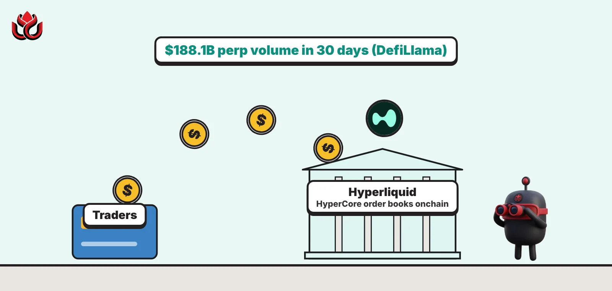

What is Hyperliquid? How the $188B-a-month onchain perps exchange works
Hyperliquid is a blockchain built for trading. Its HyperCore engine runs perpetual futures and spot order books fully onchain, and DefiLlama showed $188.1 billion of perp volume in the 30 days to November 2, 2026.

Key points
- Hyperliquid is a layer-1 blockchain with its own consensus, HyperBFT, and two parts: HyperCore for trading and HyperEVM for smart contracts.
- Orders, cancels, trades and liquidations all happen onchain. Its docs claim about 200,000 orders per second.
- As of November 2, 2026, DefiLlama showed $9.54 billion of open interest and $54.97 million of revenue over 30 days.
- HYPE is staked with validators. Unstaking takes 7 days, and there is no automatic slashing yet.
What DeepSea's data shows
HYPE is one of the most heavily traded perpetual futures among the wallets DeepSea follows. On November 2 its long/short page showed $546.93 million of HYPE longs against $119.35 million of shorts, the third-largest long book after ether and bitcoin.
Because Hyperliquid's positions are public, DeepSea also ranks individual traders. The top wallet on its KOL leaderboard that day, labeled with a Hyperliquid name, showed $10.77 million of realized profit over seven days.
Data: DeepSea (desea.io), checked November 2, 2026, 7:55 a.m. ET.
What is Hyperliquid?
Hyperliquid is a layer-1 blockchain designed around trading. Its docs describe the goal as a fully onchain open financial system, where trading and apps share one platform. Most traders know it as a perpetual futures exchange.
Perpetual futures, or perps, are contracts that track a coin's price with no expiry date. Traders use them to bet on prices going up or down, often with leverage. Hyperliquid runs them on its own chain instead of on a company's private servers.
Because everything runs on its own chain, Hyperliquid works differently from DeFi apps that sit on Ethereum. The exchange, the order books and the token all live on the same network, run by validators who stake HYPE. That design is what lets it match orders at the speed traders expect from a centralized venue.
How does Hyperliquid work?
The chain runs on HyperBFT, a consensus algorithm the team says is inspired by HotStuff. Validators produce blocks in proportion to the HYPE staked with them. On top sit two parts:
- HyperCore: the trading engine, holding order books for perps and spot, plus margin and matching. Orders, cancels, trades and liquidations are all onchain, final after one block.
- HyperEVM: a general smart contract platform like Ethereum's, which lets apps use HyperCore's liquidity as building blocks.
The HyperCore overview says mainnet handles about 200,000 orders per second, and that a client located near the servers sees median end-to-end latency of 0.2 seconds, with the 99th percentile at 0.9 seconds. Execution, not consensus, is the bottleneck, it says.
Vaults let traders pool money behind a strategy. Newer vaults are built on HyperEVM and can follow the EIP-4626 vault standard, per the vaults docs, which call the 2023 versions legacy.
The two halves talk to each other. HyperEVM contracts can read from and write to HyperCore through a system contract called CoreWriter and built-in precompiles, without an intermediary. A vault can trade on the order book directly or hand trading rights to approved agents, and its accounting is kept onchain.
What can you trade on Hyperliquid?
HyperCore runs two kinds of markets: perpetual futures and spot. Perps are the main draw. A trader posts margin, picks a leverage level and opens a long or short. If the market moves against the position and the margin runs too thin, the position is liquidated onchain.
Spot markets let users buy and hold tokens outright. Outside builders also run perp markets on Hyperliquid, and its vaults docs say newer vaults can trade on HIP-3 markets as well as spot. One such builder, Trade[XYZ], runs Hyperliquid-based perp markets; ICE said on October 29, 2026, that it plans to operate those markets for US traders, if regulators approve, and is taking a minority stake in Trade[XYZ].
A simple leverage example: with $1,000 of margin at 10x, a trader controls a $10,000 position. A 5% move in their favor makes about $500, half their margin. A 10% move against them would wipe out the margin, and liquidation comes before that point. Leverage cuts both ways at the same speed.
How big is Hyperliquid?
As of November 2, 2026, DefiLlama showed:
- Perp volume: $7.48 billion in 24 hours and $188.1 billion in 30 days
- Open interest: $9.54 billion
- Fees: $61.31 million in 30 days; revenue: $54.97 million
- Value locked: $5.52 billion, with $3.71 billion counted on Arbitrum and $1.82 billion on the Hyperliquid L1
Outside firms are building on it too. NYSE owner ICE wants to bring perps from Trade[XYZ], a Hyperliquid-based market, to US traders if regulators agree, as we reported.
Hyperliquid fees and revenue, 30 days to November 2, 2026
US$ million
Source: DefiLlama
What is HYPE, and how does staking work?
HYPE is the native token. As of November 2, 2026, it traded at about $85.37 with a market cap of about $21.64 billion (about 253.5 million HYPE in circulation), per CoinMarketCap.
Staking rules, per the staking docs:
- A validator needs at least 10,000 HYPE of its own stake, locked for one year.
- Each delegation is locked for 1 day. Moving HYPE out of staking back to spot takes 7 days.
- The reward rate falls as more HYPE is staked: about 2.37% a year when 400 million HYPE is staked.
- There is no automatic slashing yet. Validators that stop responding can be jailed by a quorum vote of more than two-thirds of stake, which stops their rewards.
More detail from the docs: rewards accrue every minute, are paid out daily and are automatically restaked with the same validator. They are based on each delegator's lowest staked balance in each staking epoch, which lasts 100,000 rounds, about 90 minutes. Validators may charge delegators a commission, and they can raise it only to a new rate of 1% or less. A validator whose own stake falls below 10,000 HYPE stops accepting new delegations.
How is Hyperliquid different from a centralized exchange?
On a centralized exchange, the order book runs on company servers and the exchange holds your funds. On Hyperliquid, the order book is chain state that validators agree on, and every trade and liquidation is public.
That openness lets anyone study positions. Data desks such as DeepSea track large Hyperliquid traders, as in our recent analysis. Public trading records also feature in a US criminal case: prosecutors say a Robinhood engineer traded Hyperliquid perps ahead of coin listings, which we covered. Those are allegations, not findings.
What are the risks of trading on Hyperliquid?
- Leverage: perps can wipe out a position quickly, and liquidations are automatic.
- Validators: the chain is secured by HYPE stake. With no automatic slashing yet, bad behavior is handled by jailing and validator votes.
- Funds on another chain: DefiLlama counts most of Hyperliquid's locked value on Arbitrum, so deposits depend on assets held on a second network.
- Vaults: pooled strategies can lose money, and the vault's manager makes the calls.
- HyperEVM apps: projects built there carry their own smart contract risk.
- Regulation: perps face strict rules in many countries, including the US.
- Speed gaps: the latency figures in the docs are for clients located near the servers. Traders farther away get slower round trips, which matters in fast markets.
LC Insight analysis
This section is our reading of the facts above, not a statement of fact.
- Hyperliquid made an onchain order book feel like a centralized exchange. The same open data is an exposure: every large position and liquidation level is visible to everyone, rivals included.
- No automatic slashing is the gap to watch. Validator discipline rests on jailing and agreement among validators, which works while the set is aligned and gets tested in a crisis.
- ICE's interest shows regulated markets take the model seriously. The friction is likely to be US derivatives law, not the technology.
What's next
- Regulatory approval for ICE and Trade[XYZ]
- Open interest swings during sharp market moves
- Any move to turn on automatic slashing
Frequently asked questions
Is Hyperliquid a blockchain or an exchange?
Both. It is a layer-1 blockchain, and its HyperCore component runs perp and spot order books onchain.
How long does it take to unstake HYPE?
Seven days from the staking account to spot, per Hyperliquid's docs, with at most five pending withdrawals per address.
Does Hyperliquid slash validators?
Not automatically. The docs say slashing is reserved for provably malicious behavior such as double-signing. Unresponsive validators can be jailed instead.
How fast is Hyperliquid?
Its docs claim about 200,000 orders per second and median latency of 0.2 seconds for a client located near the servers.
Disclaimer. This article is based on public information and the sources listed below as of the update time shown. It is for information only and is not investment, legal or tax advice. Figures may change as companies and authorities publish new data.
Sources
- Hyperliquid docs, About Hyperliquid
- Hyperliquid docs, HyperCore overview
- Hyperliquid docs, Staking
- Hyperliquid docs, Vaults
- DefiLlama, Hyperliquid (checked November 2, 2026)
- CoinMarketCap, Hyperliquid (HYPE) price, accessed November 2, 2026
- ICE, press release on Trade[XYZ] and Hyperliquid-based perpetual markets (October 29, 2026)